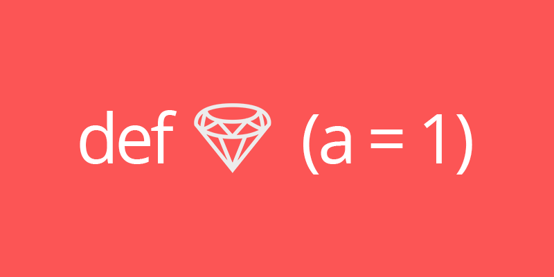

Mathematical signs and method invocation in Ruby

Ruby is a flexible language. An example of this flexibility is the optional parenthesis on method invocation.
result = my_method arg
# Same result
result = my_method(arg)
A mistyping can change the behaviour of our code. In mathematical operations, the position of the signs doesn't affect the result:
# The position of signs in mathematical operations doesn't affect the result
1 + 1 # => 2
1+2 # => 3
5 -4 # => 1
In the case of methods with optional parameters, Ruby interpreter call them based on the line syntax. If a method receives an optional parameter, the position of mathematical signs is important.
def multiply(n = 1)
n * 10
end
multiply # => 10
multiply 2 # => 20
multiply -2 # => -20
# With an space...
multiply - 2 # => 8
Another example is Date class:
require 'date'
Date.today -5 # => #<Date: 2016-01-14 ((2457402j,0s,0n),+0s,2299161j)>
Date.today - 5 # => #<Date: 2016-01-09 ((2457395j,0s,0n),+0s,2299161j)>
Ruby doesn't like ambiguity. If you run a console with -w flag it will show some warnings:
(irb):2: warning: ambiguous first argument; put parentheses or even spaces
Remember, this is an expected behaviour and Ruby know it, but be careful when you use mathematical signs and methods in the same line or your code could perform a wrong operation.
Reference
More info at RubyLang issue 11621